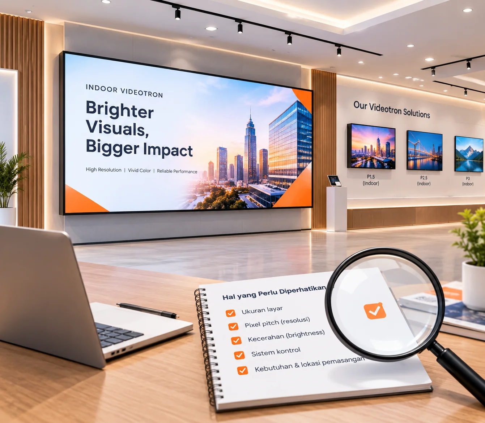
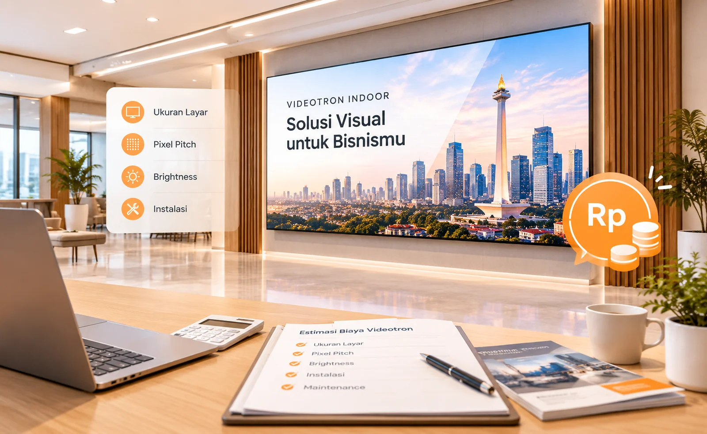

Cara Memilih Videotron Indoor yang Tepat untuk Kebutuhan Bisnis Anda
Pixel pitch, ukuran layar, kecerahan, dan sistem kontrol adalah beberapa hal penting sebelum memilih videotron indoor.
Baca SelengkapnyaPanduan praktis dari tim kami untuk membantu Anda mengambil keputusan sebelum membeli videotron indoor di Jakarta — mulai dari pemilihan pixel pitch, penyusunan anggaran, hingga contoh penerapannya di berbagai ruangan.

Pixel pitch, ukuran layar, kecerahan, dan sistem kontrol adalah beberapa hal penting sebelum memilih videotron indoor.
Baca Selengkapnya
Kenali faktor yang memengaruhi harga videotron indoor agar perencanaan kebutuhan dan anggaran lebih tepat.
Baca SelengkapnyaContoh penggunaan videotron indoor untuk lobi kantor, ruang event, retail, dan berbagai kebutuhan ruang publik.
Baca Selengkapnya